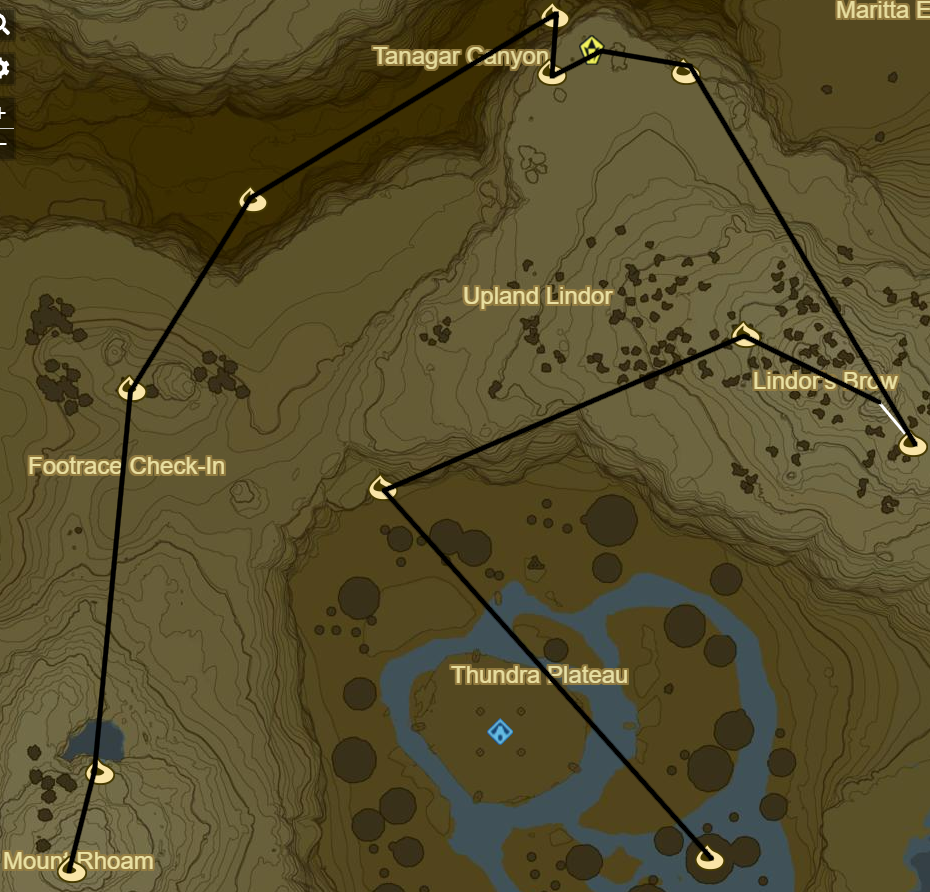

Ridgeland 1
Korok 187: Flower Trail to SE in Royal Ancient Lab Ruins
Korok 188: Rock circle to E
Korok 189: Magnesis Puzzle to SW
Korok 190: Roll boulder to S
Korok 191: Acorn below Carok Bridge to S
Zalta Wa Shrine to W (32/120)
Ridgeland Tower to W
Korok 192: Race to SW
Korok 193: Rock Circle far to E on Regencia River
Korok 194: Balloon beneath bridge to SW
Korok 195: Flower Trail to E below bridge
Korok 196: Rock on shore to SW
Korok 197: Acorn in tree to SW
Korok 198: Magnesis Puzzle to S
Korok 199: Rock in tree to SE
Memory 14 - To Mount Lanaryu: Ruins to SW (4/12)
Korok 200: Rock to SE
Side Quest: The Royal White Stallion
Tame White Horse to W
Korok 201: Apple offering to SW
Head to stable to SE over Manhala Bridge to complete quest
Register White Stallion
Speak to Old Man
Follow path back over Manhala Bridge into Ridgeland
Korok 202: Apple offering to W in Dalite Forest
Korok 203: Hanging acorn to W
Korok 204: Rock atop tree to W
Korok 205: Hanging acorn to NW
Korok 206: Rock beneath leaves to NW through Valley
Korok 207: Rock to W in gorge
Korok 208: Rock beneath leaves to NE back up towards Rutile Lake
Korok 209: Rock circle in Rutile Lake to SE
Korok 210: Magnesis rocks in stumps to NE
Korok 211: Flower patches to NE
Korok 212: Rock beneath cracked boulder to N
Korok 213: Rock Pattern to N
Korok 214: Rock atop tree at peak to E
Side Quest: EX Ancient Horse Rumors
Ancient Bridle
Korok 215: Flower Trail to S
Korok 216: Rock beneath leaves to W
Magg Latan Shrine to W (33/120)
Korok 217: Roll Boulder to S
Korok 218: Rock beneath boulder to NE
Stalnox to N (11/40)
Korok 219: Race to E of Stalnox
Korok 220: Acorn in log to SE
Korok 221: Pinwheel shooting to ENE
Korok 222: Rock in stump to N
Korok 223: Fairylights atop bare tree to N
Korok 224: Rock beneath cracked boulder to NW
Korok 225: Pinwheel shooting to NE
Korok 226: Acorn in tree to SE
Korok 227: Acorn in tree to E
Shrine Quest: The Two Rings to N across bridge
Sheem Dagoze Shrine (34/120)
Korok 228: Apple Trees to N
Korok 229: Flower patches to E
Blue Hinox to NE (12/40)
Korok 230: Rock beneath slab to NW
Korok 231: Fairylights to SW
Korok 232: Lilies to NW
Korok 233: Flower Trail atop mushroom trees to W
Korok 234: Race to NE
Korok 235: Rock circle atop mushroom to NW
Korok 236: Fairylights to W
Shrine Quest: Trial of Thunder on Thundra Plateau
Toh Yahsa Shrine (35/120)
Don't forget Rubber armor

Korok 237: Rock beneath cracked boulder to NW
Korok 238: Fairylights atop bare tree to NE
Korok 239: Race atop mountain to SE
Korok 240: Rock beneath cracked boulder to NW
Stone Talus(Lumionus) to W (9/40)
Korok 241: Rock to W
Korok 242: Magnesis Puzzle down to N
Korok 243: Rock pattern in Canyon to SW
Korok 244: Acorn in tree to SW near Footrace Check-In
Korok 245: Rock to S
Korok 246: Rock to S atop Mount Rhoam
Korok 247: Balloon under mushroom to SE
Blue Hinox to SE (13/40)
Korok 248: Balloon under mushroom to S
Korok 249: Race atop Mushroom to SW
Korok 250: Fairylights to NW
Tabantha Bridge Stable to W
Side Quest: A Gift for the Great Fairy
Shrine Quest: Cliffside Etchings
Shae Loya Shrine to S (36/120)
This should be the 36th Shrine so it should be possible to retrieve Master Sword
Complete Side Quest: The Korok Trials
Korok 251: Rock to SE, W of Sheem Dagoze
Shrine Quest: Under a Red Moon to SW
Blood moons only happen when there are monsters to be respawned
Mijah Rokee Shrine (37/120)
Korok 252: Rock in river to SW
Korok 253: Balloon in tree to NW
Stone Talus(Rare): atop Illumeni Plateau to NW (10/40)
Korok 254: Flower patches to W
Korok 255: Rock to N
Korok 256: Pinwheel shooting to W at map edge
Korok 257: Rock pattern to NE
Korok 258: Race to E
Korok 259: Hanging acorn to NW
Korok 260: Rock beneath slab to NE in gorge
Korok 261: Rock between pillars to E
Korok 262: Magnesis puzzle to N
Korok 263: Fairylights atop flagpole to N
Warp to Shae Loya Shrine
Korok 264: Race under Tabantha Great Bridge to NW
Next: [Tabantha 1](09 - Tabantha1.md)